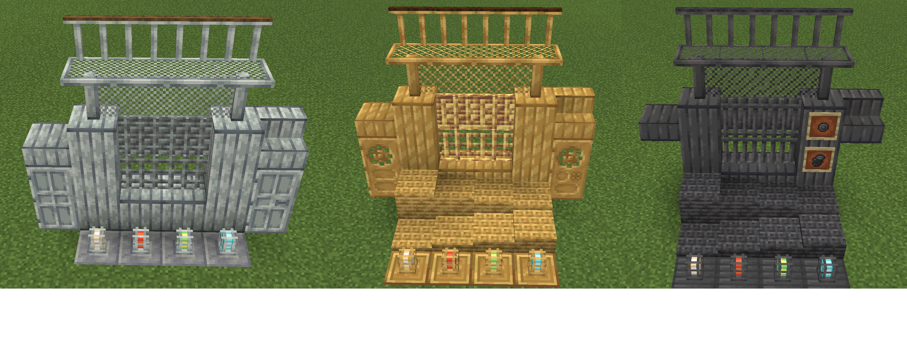

Добро пожаловать в Create, мод, предлагающий множество инструментов и блоков для автоматизации строительства, декорирования и эстетики.Create Deco — лучший мод, позволяющий вывести ваши индустриальные, городские или стимпанк-постройки на новый уровень. Create Deco безупречно интегрируется с существующим набором строительных блоков в Create: от подиумов до ламп в клетках, от транспортных контейнеров до листового металла.
Create Deco имеет несколько наборов блоков, каждый из которых доступен из шести материалов: андезита, цинка, железа, промышленного железа, меди и латуни.
Дополнительный декор Помимо наборов металлических блоков, мод включает в себя варианты декора, такие как наклейки с различными символами, которые можно использовать для обозначения опасности пожара или зоны ограниченного доступа. Кроме того, есть транспортные контейнеры всех 16 цветов красок, которые действуют как хранилища предметов, но имеют новый новый вид
В Create Deco представлен ряд новых цветов кирпича, которые можно разрезать или изменять для разнообразия. Цвета кирпича: Красный, Алый, Синий, Умбра, Дин, Сумерки, Зеленый и Жемчужный. Эти кирпичи могут быть короткими, длинными, черепичными, потрескавшимися или покрытыми мхом, и все они имеют ступеньки и плиты.
.png)